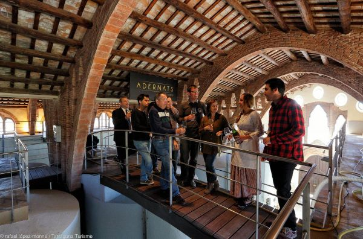
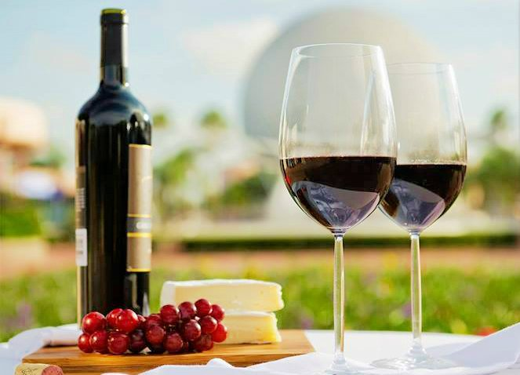

El vino es la única obra de arte que se puede beber...
Bodegas , viajes y gastronomía en un solo lugar.
Bodegas

Increíbles y modernas Bodegas te esperan distribuidas en toda la región. Variedad en vinos y espumantes te van a sorprender en cada nueva visita, no te imaginas lo que te espera!
Turismo
No seas parte solo de una visita, se parte de cada Bodega o atractivo que visites, no solo lo vas a llevar en tus fotografías, si no también quedaran por siempre en tus recuerdos, Nunca dejes de imaginarlo.
Gastronomía
Colores, contrastes, nunca imaginaras sentir tantos sabores en un solo plato, cada región te hace redescubrir en tu paladar sabores exquisitos, acompañado de un buen Vino.. Salados y dulces siempre hay un vino.
Somos Vida Tinto
Nos especializamos en obtener contenido para que la experiencia al visitar las bodegas más importantes de todo el mundo, sea realmente un viaje que nunca se olvide. Desde Vida Tinto trabajamos para que puedas encontrar los mejores destinos, aprovechar al máximo la gastronomía regional, los distintos servicios que ofrecen las bodegas. No dejes de visitar todas las alternativas que te proponemos, para vivir una experiencia unica!
Varietales y sus aromas
La malbec es una variedad de uva morada usada para la elaboración de vino tinto. Las uvas tienden a tener un color oscuro y abundantes taninos, y se hicieron conocidas por ser una de seis uvas permitidas en las mezclas del vino de Burdeos. Wikipedia
La variedad de uva cabernet sauvignon es una de las uvas tintas más conocidas del mundo. Crece en casi todas las grandes zonas vitícolas, en un diverso espectro de climas. ... XVII, es el producto del cruce entre la Cabernet Franc y la Sauvignon Blanc. La clave de su éxito es que se trata de una variedad de fácil cultivo.
Merlot pertenece a la misma familia que los "cabernet". El vino merlot se caracteriza por su finura y suavidad, sin dejar de ser aromático y carnoso. Es de color rubí muy intenso, de graduación mediana y envejece rápidamente sin perder calidad.